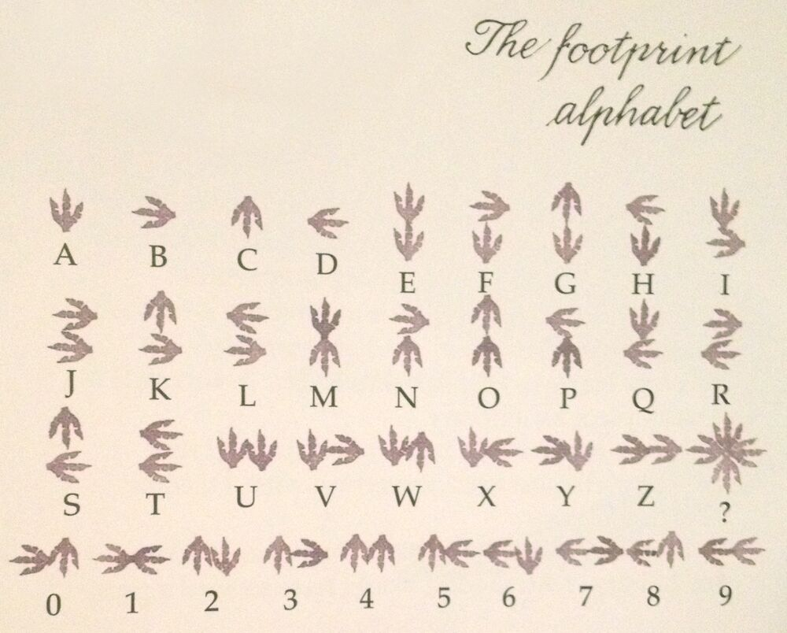
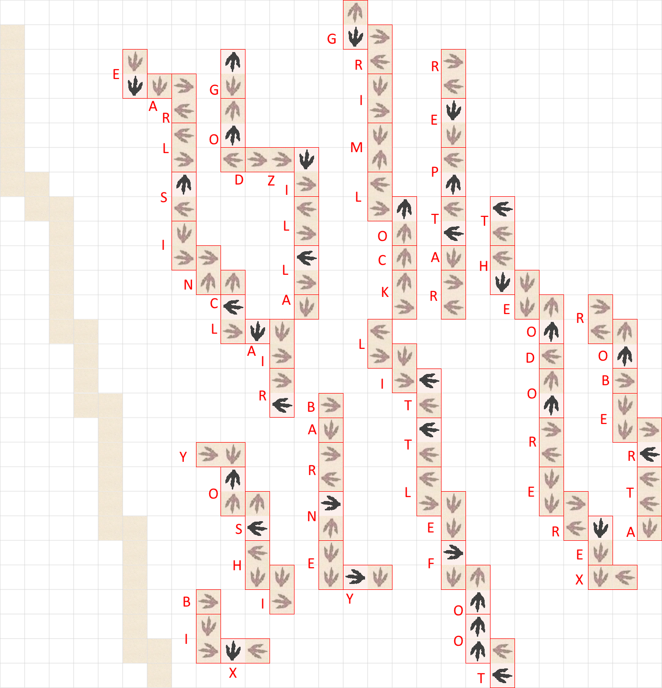
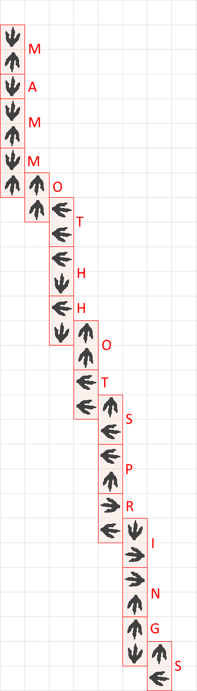

Each trail of footprints should be interpreted as a string in the Dinotopia footprint alphabet, with tracks either standing for A, B, C, D by themselves, or paired up (preserving relative position) for other letters.
The trails must be completed with footprints instead of the Dinotopian ?s. Each track can have each of its ?s replaced with a single footprint to resolve to the name of a famous fictional dinosaur.
| Dinosaur | Source |
|---|---|
| GRIMLOCK | Transformers |
| EARL SINCLAIR | Dinosaurs (TV Series) |
| GODZILLA | Godzilla |
| REPTAR | Rugrats |
| THEODORE REX | Theodore Rex |
| ROBERTA | Jurassic Park |
| LITTLEFOOT | The Land Before Time |
| BARNEY | Barney & Friends |
| YOSHI | Nintendo |
| BIX | Dinotopia |
The inserted dinosaur tracks line up with the blank trail on the left of the image, such that when tracks are shifted left (preserving order when there are two tracks on one row) they form a new trail that can be parsed as before:
The trail resolves to the answer, MAMMOTH HOT SPRINGS.